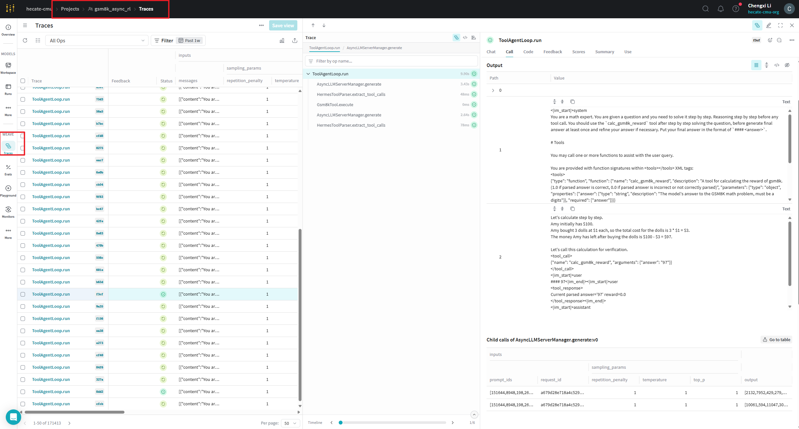

Wandb Weave in verl
In Agentic RL, to help us better analyze the multi-turn conversations and tool calls within a trajectory for optimizing the training process, verl provides a Trace function, which records the input, output, and timestamps of specified functions and supports viewing them in a visualization interface. Currently, it supports wandb weave.
Thanks so much to Chengxi Li @ CMU and Chenyang Zhao @ Amazon for their help on this docs.
Quick Start
Add the following parameters in config.yaml or on the command line to enable Trace:
trainer:
rollout_trace:
backend: weave # Currently, only weave is supported
token2text: true # Whether to display decoded text in the Trace
Or append to the bash command:
+trainer.rollout_trace.backend=weave \
+trainer.rollout_trace.token2text=True
Note: You must use the + sign here.
The following configurations are also required as prerequisites:
| Scenario | Required Parameters | Notes |
|---|---|---|
| Using Weave and logging to wandb | trainer.logger=["console","wandb"] |
It's recommended to enable wandb logging simultaneously to view all information in one place |
| Enable async rollout | actor_rollout_ref.rollout.mode=async and actor_rollout_ref.rollout.multi_turn.enable=true |
Trace is currently only enabled in agent_loop. SGLang itself doesn't require setting mode=async for asynchronous operation, but this setting is necessary for Trace to take effect |
Note that directly launch the new bash script may not work. In the following steps, we provide a step by step guide to enable Trace on latest verl and sglang.
Environment
- Set the environment variable
WANDB_API_KEY
export WANDB_API_KEY=your_wandb_api_key
Dataset Requirements
The dataset needs a new column agent_name, which can be added in the map_fn:
# python
data = {
...,
"agent_name": "tool_agent", # new column
}
How to Use
Please follow these steps exactly, or you will have a very painful experience.
Create a New Docker Container
Before use, you need to configure WANDB_API_KEY. Refer to this process.
# If your system has not configured HF_TOKEN and WANDB_API_KEY, please configure them first
docker run -it --name h100_verl_{your_name} --gpus all \
--shm-size 32g \
-v {your_cache_path}:/root/.cache \
--env "HF_TOKEN=$HF_TOKEN" \
--env "WANDB_API_KEY=$WANDB_API_KEY" \
--ipc=host \
lmsysorg/sglang:latest \
/bin/bash
After entering the container, you can check the mapped environment variables:
echo $HF_TOKEN
echo $WANDB_API_KEY
From now on, every time you exit the container, you can restart it with this command:
docker start -i h100_verl_{your_name}
Install SGLang from Source
Configure the Python environment
mkdir -p /tmp
chmod 1777 /tmp
sudo apt update
sudo apt install -y python3.10 python3.10-venv
sudo python3 -m ensurepip --upgrade
sudo python3 -m venv ~/.python/verl-sglang
source ~/.python/verl-sglang/bin/activate
sudo python3 -m pip install --upgrade pip
sudo python3 -m pip install --upgrade uv
First, install verl, then install SGLang.
cd ~
git clone https://github.com/volcengine/verl.git
cd verl
python3 -m uv pip install -e ".[sglang,geo]"
python3 -m uv pip install -r ./requirements.txt
You will encounter this error:
Resolved 130 packages in 1.96s
× Failed to build `flash-attn==2.8.1`
├─▶ The build backend returned an error
╰─▶ Call to `setuptools.build_meta:__legacy__.build_wheel` failed (exit status: 1)
Fix it with the following steps:
python3 -m uv pip install wheel
python3 -m uv pip install -r ./requirements.txt --no-build-isolation
Then install SGLang upstream:
cd ~
git clone https://github.com/sgl-project/sglang.git
cd sglang
python3 -m uv pip install --upgrade pip
python3 -m uv pip install -e "python[all]" --find-links https://flashinfer.ai/whl/cu124/torch2.6/flashinfer-python
Install additional dependencies for vllm and weave:
python3 -m uv pip install vllm==0.9.1
python3 -m uv pip install weave
Modify and Run
We can make simple modifications to the existing scripts to enable multi_turn and async rollout in the run script, and add an agent_name column in the def make_map_fn(split) function of the data processing script.
Open the ~/verl/examples/sglang_multiturn/run_qwen2.5-3b_gsm8k_multiturn.sh file inside your container, remove the $@ from the end of the last line, and change the following parameters:
# Note: Remove the $@ from the end of the original total_epochs line
# do not include these comment lines in the script, it will cause error
trainer.total_epochs=15 \
+trainer.rollout_trace.backend=weave \
+trainer.rollout_trace.token2text=True \
actor_rollout_ref.rollout.mode=async \
actor_rollout_ref.rollout.multi_turn.enable=true
Append "agent_name": "tool_agent" in ~/verl/examples/data_preprocess/gsm8k_multiturn_w_tool.py
def make_map_fn(split):
def process_fn(example, idx):
question_raw = example.pop("question")
question = question_raw + " " + instruction_following
answer_raw = example.pop("answer")
solution = extract_solution(answer_raw)
data = {
"data_source": data_source,
# new column for weave trace
"agent_name": "tool_agent",
"prompt": [
{
#...
}
]
}
return data
return process_fn
You can now test:
cd ~/verl
python3 -m uv pip install .
export CUDA_VISIBLE_DEVICES=0,1,2,3,4,5,6,7
# Pull and preprocess the gsm8k dataset
python examples/data_preprocess/gsm8k_multiturn_w_tool.py
Start 8-card training.
bash examples/sglang_multiturn/run_qwen2.5-3b_gsm8k_multiturn.sh
Debugging
If you encounter this error after starting the bash script:
raise ValueError(f"Feature type '{_type}' not found. Available feature types: {list(_FEATURE_TYPES.keys())}")
ValueError: Feature type 'List' not found. Available feature types: ['Value', 'ClassLabel', 'Translation', 'TranslationVariableLanguages', 'LargeList', 'Sequence', 'Array2D', 'Array3D', 'Array4D', 'Array5D', 'Audio', 'Image', 'Video', 'Pdf']
This is not the actual error. This error confused me for a very long time. I carefully checked the log and found the problem. You can look a few lines up in the error log. At the very beginning of the error stack, the Python environment is /root/.python/verl-sglang/lib/python3.10, but at the bottom of the stack, it becomes /usr/local/lib/python3.10. It is clear that the Python environments are mismatched:
- The main process uses the virtual environment:
/root/.python/verl-sglang/lib/python3.10/site-packages/ - The Ray worker process uses the system Python:
/usr/local/lib/python3.10/dist-packages/
The final solution to this problem is to modify the verl/trainer/constants_ppo.py file to be:
import os
import sys
# Get the current Python interpreter path and virtual environment path
python_executable = sys.executable
virtual_env = os.environ.get("VIRTUAL_ENV", "")
python_path = os.environ.get("PYTHONPATH", "")
# If in a virtual environment, ensure the site-packages of the virtual environment are included
if virtual_env:
site_packages = os.path.join(virtual_env, "lib", "python3.10", "site-packages")
if site_packages not in python_path:
python_path = f"{site_packages}:{python_path}" if python_path else site_packages
PPO_RAY_RUNTIME_ENV = {
"env_vars": {
"TOKENIZERS_PARALLELISM": "true",
"NCCL_DEBUG": "WARN",
"VLLM_LOGGING_LEVEL": "WARN",
"VLLM_ALLOW_RUNTIME_LORA_UPDATING": "true",
# Add Python environment configuration
"PYTHONPATH": python_path,
"VIRTUAL_ENV": virtual_env,
},
# Specify the Python interpreter
"python": python_executable,
}
Viewing the Trace
Log in to the account associated with your $WANDB_API_KEY. Find the gsm8k_async_rl project, select Trace from the sidebar, and you will see the multi-turn conversations and tool call information.
